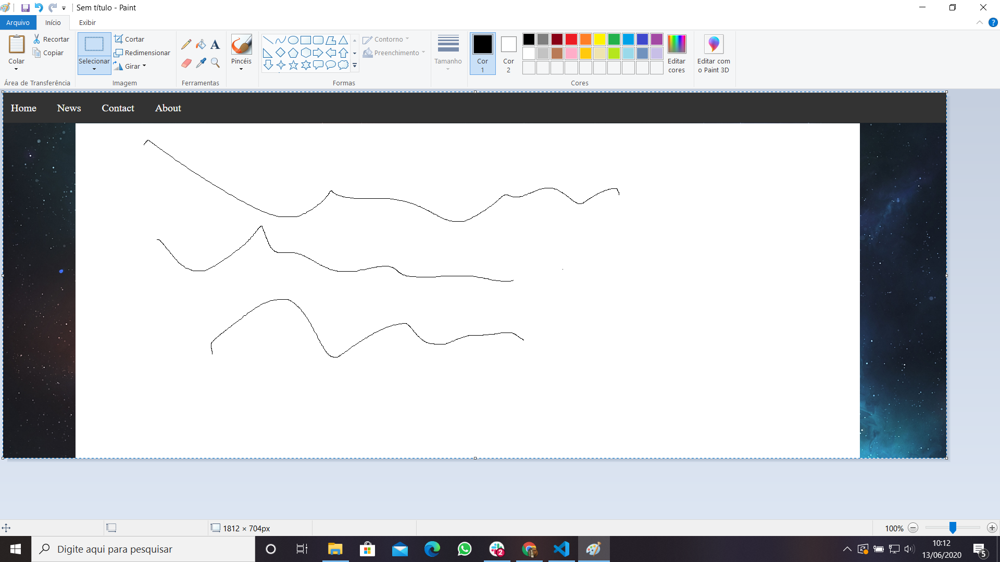

A pergunta foi feita pelo Paulo Henrique Santos Gabriel, me mandou uma imagem de como queria que ficasse:
Para que seja feito conforme solicitado por ele, é possível ver através do link a seguir:
Link para o Repositório do GitHub Link para o Exemplo